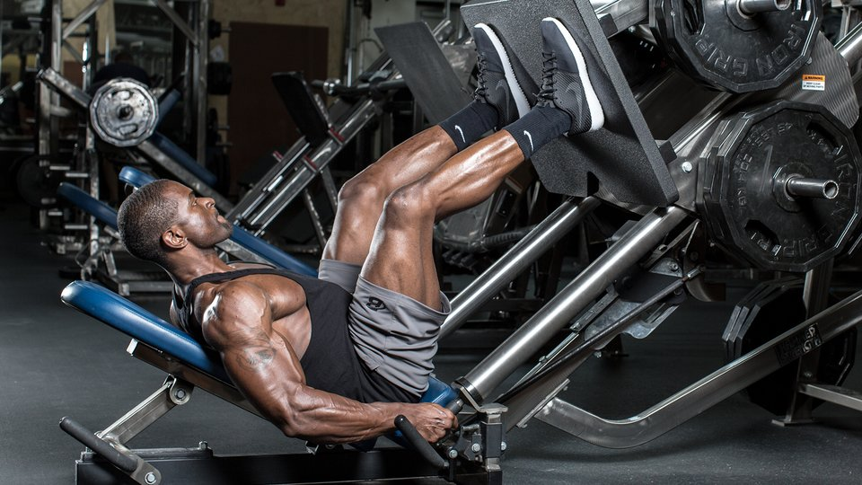

Home

Progressive Overload
Yes, Progressive Overload. You here it everywhere, whether you're losing or gaining weight. The key is progressive overload. You've to log your workout you do with a paper and a pen and keep it safe to stay on track. Hereafter,
you don't!. Yes. All You need is your Buddy which is me. Track your workouts with me and whenever you're training the same body part again, You can easily review what you did with the previous session and then,
PROGRESSIVELY OVERLOAD
© Priyadarsan Mahendiran